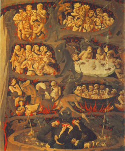

Kotsko, Adam. The Prince of this World. Stanford: Stanford University Press, 2017. ISBN-10: 1503600203. Hardcover, paperback, e-book. 225 pages.
Adam Kotsko’s aim in The Prince of this World might be construed as a clever modulation of the oft-quoted line from the 1995 film The Usual Suspects: “The greatest trick the Devil ever pulled was convincing the world he didn’t exist.”[1] Kotsko’s genealogy of the devil in the historical development of Christian theology suggests we might better modify the line to say, “the greatest trick God ever pulled was convincing the world the devil most definitely does exist.” This is not to make assertions about the objective existence or non-existence of supernatural beings, but rather to point out that the devil, the demonic, and the concept of hell in Christian theology take on certain political ramifications that still haunt us in our supposedly irreligious age.
Kotsko makes himself clear at the outset of the book: “my ultimate goal is to rethink some of the central concepts of modernity in light of their Christian theological roots.” (14). He seeks to show how God became the devil in Christianity, how the devil came to both take on the punitive aspect of God’s character, excepting the divine from the problem of theodicy, and to embody the scapegoating mechanism by which God’s people punish their earthly enemies—equating Jews, Muslims, women, blacks, etc. with the demonic. “A God who has become the devil turns his followers into demons” (183).
In the genealogy sweep from European Christianity to modernity, therefore, Christendom becomes a secular society that has internalized its own sinfulness and turned this Nietzschean ressentiment upon the devils among itself, creating the living hell of neoliberalism. Life in secularism’s hell serves as its own Panopticon of self-inflicted punishment which creates and destroys Giorgio Agamben’s “bare life” at will—devils are generated and destroyed by God’s demon followers, with new devils taking their place immediately afterward in a hellish cycle. Neither dead in the grave nor alive in God’s heavenly presence, hell is a place of perpetual torment, with the righteous faithful looking on with sadistic enjoyment—a “sociopathic lack of compassion” (177). Indeed, there is neither sympathy for the devil nor rest for the wicked.
Instead of an embracing of some notion of an “authentic” Christianity or an outright rejection of the religious—an impossible task according to the author’s Schmittian genealogy from Christianity to modernity—Kotsko suggests an alternative rethinking of the Christian tradition that would set itself as thoroughly anti-Christian and anti-secular nonetheless. “If we are to build an alternative order, we must recognize that we are shaped by that order and that we can only use materials that have been shaped by that order” (204). Indeed, “hell could be the staging ground for a radical critique of secular modernity as a whole” (168)—and this doesn’t just mean playing devil’s advocate.
I want to attempt a semi-brief summary of a text that at some points resembles a whirlwind, weaving between major thinkers or ideas in Christian theology and Western political philosophy. This is necessary to grasp the nature of the various arguments strung together in the book. Kotsko seeks to show how God became the devil by elucidating two theoretical impasses in Christianity which, in my understanding, drive this development: theodicy and free will. In the first instance, God’s people are hard-pressed to reason why a good and all powerful God allows suffering to persist, especially “undeserved, unjust, or meaningless suffering” (8). In the second instance, they must account for their own free will, which causes them to sin by nature but nevertheless holds them morally accountable—a doctrine better known as “original sin.” The figure of the devil provides a brilliant solution to both of these problems, allowing evil to be personified in the devil, excepting God from moral failure, and casting the evil of the world upon the Other, a sort of self-legitimation of the righteous. In short, God and his followers are or remain righteous—if the devil made them do it.
This is traced genealogically by elucidating various paradigms firstly in scripture and  secondly in ancient and medieval Christianity. In the Old Testament the devil features prominently in the stories of the Garden of Eden and of Job, acting in both cases as an abstract personification of evil (the snake and the accuser) which excuses God of the responsibility for the existence of temptation and suffering. In turn, it also allows evil to be personified as despotic oppression later on, inspiring the Israelites’ revolutionary flight from Egypt and the radical political critique of the Hebrew prophetic tradition. Evil in this way is embodied as Pharaoh, foreign kings of the Near East, or the wicked kings of Israel. Thus, while theological impasses still persist, the political struggles of Israelite war and captivity inspire the apocalyptic theologies featuring God’s liberative acts from devilish earthly rulers. This is continued in the book of Revelation, which acts as a subversive political literature inciting Christian resistance toward the demonic Roman Emperor Nero and portrays the final vindication of God’s people at the end of time.
secondly in ancient and medieval Christianity. In the Old Testament the devil features prominently in the stories of the Garden of Eden and of Job, acting in both cases as an abstract personification of evil (the snake and the accuser) which excuses God of the responsibility for the existence of temptation and suffering. In turn, it also allows evil to be personified as despotic oppression later on, inspiring the Israelites’ revolutionary flight from Egypt and the radical political critique of the Hebrew prophetic tradition. Evil in this way is embodied as Pharaoh, foreign kings of the Near East, or the wicked kings of Israel. Thus, while theological impasses still persist, the political struggles of Israelite war and captivity inspire the apocalyptic theologies featuring God’s liberative acts from devilish earthly rulers. This is continued in the book of Revelation, which acts as a subversive political literature inciting Christian resistance toward the demonic Roman Emperor Nero and portrays the final vindication of God’s people at the end of time.
However, in all of this, God allows and limits evil in order to glorify himself in his salvific acts and thereby giving meaning to suffering. God lets one suffer to glorify himself, using the devil as his privileged instrument of glorification. As Kotsko writes in regard to Israel, “the magnitude of suffering serves to make God’s rival all the more villainous while rendering God’s victory and the restoration of Israel all the more striking and glorious” (48). Thus, God is not the devil quite yet, but he’s starting to exhibit some decidedly perverse behaviors.
In the Christian era, this critique is displaced into the spiritual realm, effectively de-politicizing the use of the demonic mechanism as an apocalyptic critique of power. Around the time of the Christianization of Rome as a result of Constantine’s conversion, theologians such as Irenaeus, Athanasius, Gregory of Nyssa, and Augustine had to make sense of their position as religious leaders in the Empire. Instead of evil being personified in the demonic despot of the foreign King or pagan Roman Emperor, therefore, it must be displaced onto heretical, gnostic, pagan beliefs and the carnality of an ever-sinful human will—a two-pronged turn which equates righteousness with correct doctrine and ascetic denial of sin. In this way the depoliticized church can coexist with the state, and the righteous can blame the unrighteous as heretical, hedonistic, demonic colluders who will be damned by a holy God.
The problem is that now God’s punishment of the damned is all too similar to the oppression inflicted upon his people by the old earthly rulers. Indeed, the two become almost indistinguishable. This is how God becomes the devil, by displacing evil in such a way that the principal struggle is no longer a political one against the demonic earthly rulers but instead a spiritual struggle against the heretical Other and the unruly, sinful self—the former as the embodiment of the demonic which must be converted or eradicated, and the latter operating on the internalization of guilt driving one to obey for fear of damnation. This is precisely Nietzsche’s characterization of Christianity as a traversing from ressentiment to bad conscience.
This is all inscribed further into Christian theology by the time of Anselm and Aquinas who focus on the fault of the individual to measure up to God’s law and inflict a punitive theology of infernal punishment in hell. “In short, the God of medieval Christianity is a God who delights in suffering, a God who has become demonic” (103). Anselm’s ransom theory of atonement confirms again that the devil is God’s unwitting servant in the drama of salvation, holding the suffering captive so that Christ may set them free for his own glory—this, similar to the function of the Eden’s snake or Job’s accuser, as well as the earthly rulers whose wickedness works for God’s glory.
Augustine makes a comeback here in Kotsko’s genealogy, instituting a theology of the Heavenly and Earthly cities, the latter a penultimate, secular imitation of the former. In this, “Augustine traces the rivalry between the two cities all the way back to the very creation of the world … this move severely exacerbates the tensions of the problem of evil, insofar as it continually floats with the dreaded possibility that God is the direct founder of the earthly city as well as the heavenly” (124). This is tied to the biblical narrative of the fall of the devil at the dawn of time as well, in which a portion of God’s heavenly host decide to rebel against their Creator. Although imbued with the ability to act freely on their own accord, this rebellion is nonetheless met with damnation. Thus it would seem that free will is a something of a farce for the devil and his demons from the start, a privilege that can only be exercised within certain predefined parameters. Hence the enigma that ensues, since the devil as a fallen angel is also a creation of an infinitely powerful God, yet still finds a way to subvert that selfsame God.
Nevertheless, the devil inhabits the Earth, his demons scurrying about to provoke sin and rebellion against God with the church constantly trying to weed both the devil and his followers out. In Kotsko’s rendering, God is constantly coming up against situations which make him morally responsible for evil, but nevertheless eludes them by displacing responsibility onto the devil and the sinfulness of humans. In this way, by calling our attention to these dishonest moves, Kotsko suggests that God became the devil himself, and the Earth his living hell, in which his unwitting followers torment and demonize the Other to generate a sadistic enjoyment—or glory, since the difference has in truth become negligible.
The image of the Panopticon is particularly helpful here, showing how the internalization of guilt results in a paranoid condition from which one cannot escape. One is sinful, therefore one deserves what one gets and God is always watching, sitting in judgment. Even though in the freedom of the will the desire for change might exist, the sinner is still condemned by an innate proclivity for wrongdoing and thus cannot justify rebellion against God. This is illustrated in Dante’s inferno as those being tortured look up and wonder at the reason for their suffering but still cannot escape the circular logic of guilt which condemns them by their very existence.
Kotsko shows how, in our neoliberal era, the political and economic system of the day reproduces itself endlessly because we are unable to imagine another one, simply lapsing back into a repressive logic that can only justify the status quo. In this model, injustice happens because we deserve it as sinners, so we might as well realize the finitude of humanity and carry on, thereby demonizing the unrighteous Other and stoking the fires of our neoliberal living hell for the enjoyment of our devil-God. A paradigmatic example of this logic is the terrifying ubiquity of the murder of black people in America by police, in which racialization of the demonic as Blackness constitutes a de facto policy of state-sanctioned murder—the state as the demonic executor of God’s wishes.
In my view Kotsko does not make a compelling enough case against those who will wish to merely reform Christianity in light of his work. While this is by no means my own inclination, the liberal movement to reform Christianity in its violent modern aftermath remains a significant one. I agree with Kotsko’s statement regarding fundamentalism, that “clearly such a program is no alternative to modernity” (203). However, the desire to postulate an ahistorical, Platonic essence of true, real, authentic, palatable Christianity runs deep in certain circles—in order to compensate for the destructive legacy of Christianity while sentimentally savoring the compelling elements of the faith. Kotsko seems to merely equate this with the fundamentalist unwillingness to compromise Christian belief at all. This is a false equivalence in my perspective, and the liberal impetus to find a third way which sheds the violent scales of the devil’s Christianity prides itself principally on the fact that it is not fundamentalist, indeed operating on a liberal elitist logic of demonization of the other itself, a false compassion for the ignorant fundamentalist.
I do appreciate Kotsko’s sentiments regarding those on the opposite side of the spectrum who would in a secular, triumphalist fashion purge modernity of all things religious. He states: “We are not dealing with mere cultural baggage that can be discarded at will. We cannot simply shed the Christian shell in order to get at the kernel, because it is precisely the core value of Western modernity that has bequeathed to us the entire grim apparatus of providence with its devilish supplement” (198). In the same way though, we cannot shed the modern shell in order to get at a pure, undisturbed, inoffensive Christianity. The lived and embodied history of Christianity is all that there is, and it is this that must be dealt with on its own terms. While Kotsko is honest about his desire to rework Christian theology in the service of a radical critique of itself and secular modernity, it would be wise to spend more time differentiating this from those who will take his work as a liberal injunction to purge Christianity of its vulgar obscenities. Nonetheless,in spite of these potential misappropriations, Kotsko takes a difficult position here and he does it well.
Kotsko’s quip, “hell could be the staging ground for a radical critique of secular modernity as a whole” (168), seems to allude to the apocalyptic, prophetic critiques of the established political order. For those interested in political theology, Kotsko’s work is a fantastic place from which to begin the work of understanding and responding our own historical situation. Thus, in our own neoliberal hell, after the election of what may be our own potentially devilish Pharaoh or Nero, it would be wise to take up this apocalyptic attitude, so as to cease demonizing one another—especially as atrocities motivated by hatred become more and more prevalent every day. Kotsko states at the end of the book: “If our heritage is demonic, then finding a use for it may result in thinking in a different and far riskier direction. It may mean asking what it would look like to free the devil from the burden of being the devil—in other words, what it would mean for the devil to be saved” (206). What would it mean to stage an apocalyptic political critique of this latest devil without creating a space which would inevitably give rise to another one that would take its place? As Georges Bataille writes in On Nietzsche: “Unlike God, humanity isn’t condemned to condemn.”[2]
Benjamin Steele-Fisher is a graduate student in religious studies at the University of Denver. His primary interests include the intersection of political theology and critical theory.
[1] The Usual Suspects, Directed by Peter Singer, New York: MGM Studios, 1995. Note, though, that the line from Singer’s film is in fact a close paraphrase from Baudelaire’s 1864 short story, “The Generous Gambler.”
[2] Georges Bataille, On Nietzsche (London: Continuum, 2008), 58.